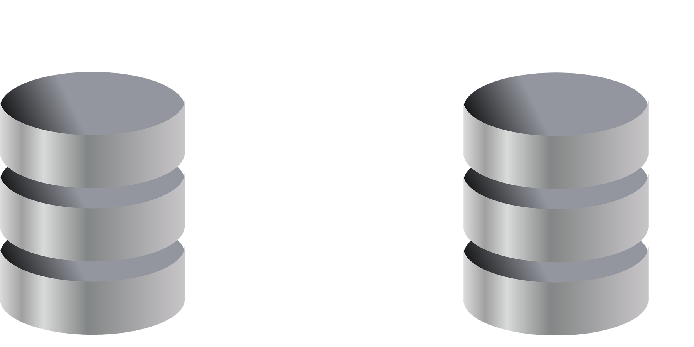

Migration's Missing Instruction Manual
Drupal Camp Atlanta
November 10, 2018
Jim Smith

Drupal Developer
Oak Ridge National Lab
Derek Brownlee

Drupal Developer
Oak Ridge National Lab
Oak Ridge National Laboratory
https://www.ornl.gov
Covered in this Session
- Basics of D7 to D8 migration
- Mistakes we made
- Helpful tips and tricks
Not Covered in this Session
- Migrating from other CMSs
- Solutions for every migration problem
Goals of a Migration
- Make it complete
- Make it easy
- Make it reproducible
Goals of a Migration
- Make it complete
- Make it easy
- Make it reproducible
Plan. Plan. Plan.
source: drupal.org
Plan what?
- Content to move; content to ignore
- Content to restructure (e.g., move to paragraphs)
- Content to clean up (e.g., improve consistency)
- Improvements to content editor experience
Don't Migrate
- Configuration, if you are making major architecture changes
- Content that no one sees
- Content from a small number of nodes when copy/paste is easier
Plan Migration Order
- Configuration (optional)
- Taxonomy Terms
- Users
- Files
- Media Entities
- Paragraphs
- Nodes
Migration Steps

Migration Steps

Migration Steps

Migration Steps
Core Modules
- Migrate
- Migrate Drupal
- Migrate Drupal UI
Contrib Modules
- Migrate Upgrade
- Migrate Tools
- Migrate Plus
- Migrate Source CSV
Contrib Modules
- Migrate Devel
- Migrate Manifest
- Migrate Run
Migration YML File
Migration YML File:
Metadata

Source
- Source plugins fetch data from the source
- The source can be SQL database, CSV, JSON, XML or SOAP
- The plugin can come from core, a contrib module, or custom module
Migration YML File:
Source

Process
- Process plugins can
- Copy data
- Add default data
- Combine or extract data
- Skip data
- Pipe data to different fields
- Manipulate data
- These plugins can be chained together
Migration YML File:
Process

Destination
- Destination plugins define the kind of Drupal entities to be created
- Content entities: Nodes, users, taxonomy terms, files
- Configuration entities: Content types and field definitions
Migration YML File:
Destination

Connect to Database

Connect to CSV
Advantages:
- See all of the data at once
- Edit, clean up the data
- Use a custom query to combine data from different content types
Config Single Import
Create a Module
- When you expect changes in your source before you go live
- If you need a custom plugin
- If you use a source other than a database
Using a Module
- Don't forget to disable, then enable it each time you make a change
Use Drush
- Status: drush ms
- Import: drush mim
- Rollback: drush mr
- Reset: drush mrs
Use Drush
Single entity:
drush mim my_nodes --idlist=1234
Small batch:
drush mim my_nodes --limit=10
Look at the Database
Look at the Database
Message Tables

Migrate Devel Module
Migrate Devel Module
See Problems in the Array

More Tips
Let Drupal Help You
CKEditor can clean up markup

Dependencies

- Required: 100% of content must be migrated.
- Optional: if there are no items from the dependent migration, the migration will still run.
Comments
Leave yourself notes, test iteratively.
Pseudo-fields
Parse your data.

Pseudo-fields
Parse your data.

Dummy Variables
Overcome limitations of skip_on_empty.

Dummy Variables
Overcome limitations of skip_on_empty.

Pantheon Timeout
Use --feedback flag
Lando Slowness
Use "airplane mode"
Custom Plugins
Solve problems core and contrib plugins can't
Custom Plugins
Solve problems core and contrib plugins can't
Custom Plugins
Add as you would any plugin